Startseite
Karte, Batterie, Wind. Für Quer- und Hochformat merkt sich die App je eine eigene Anordnung.
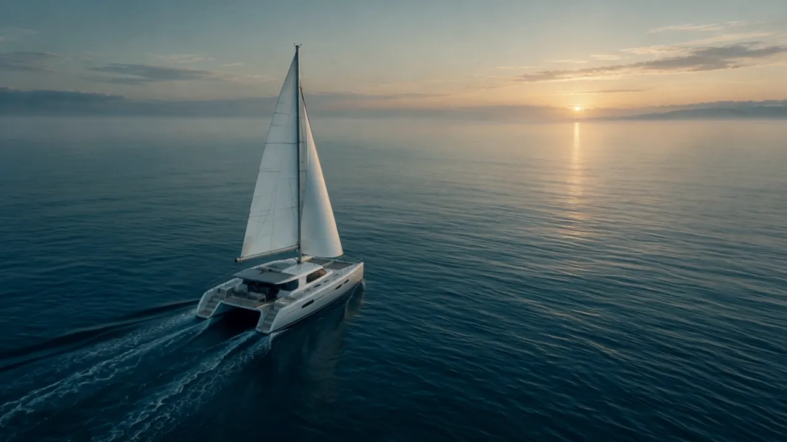
Android-App für Boote, Alpha-Stand
seaFOX liest die NMEA-Daten deines Bootes über das Bord-WLAN und zeigt sie auf einem Android-Tablet.
Marine-Assistent in Entwicklung. Nicht für die alleinige Navigation bestimmt.
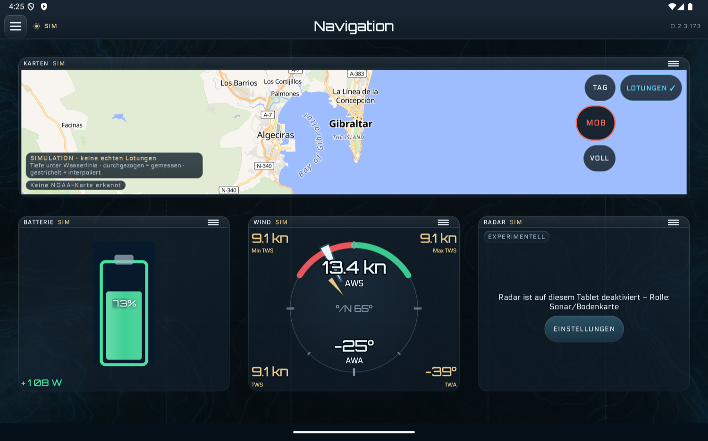
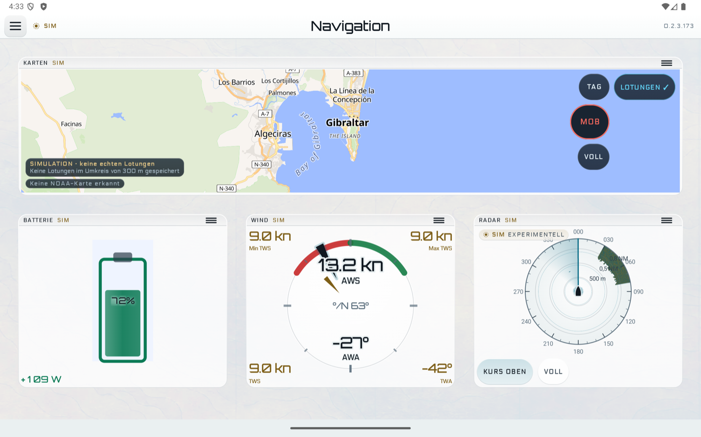
Die App zeigt nur, was du eingerichtet hast.
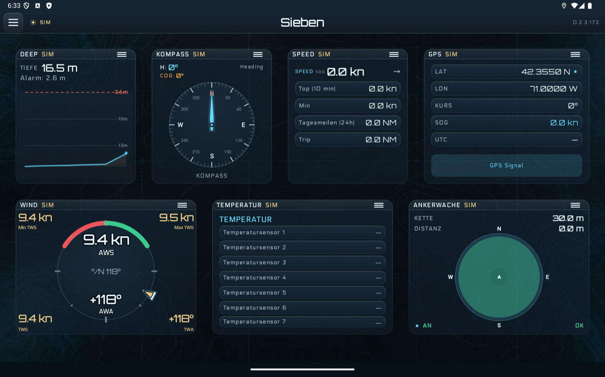
Entwicklungsvorschau, Simulatordaten (SIM). Sieben Anzeigen; Entwicklungsstand, nicht der Hauptstand.">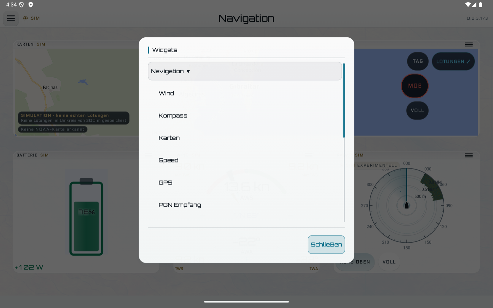
App-Aufnahme, Simulatordaten (SIM). Katalog der Anzeigen.">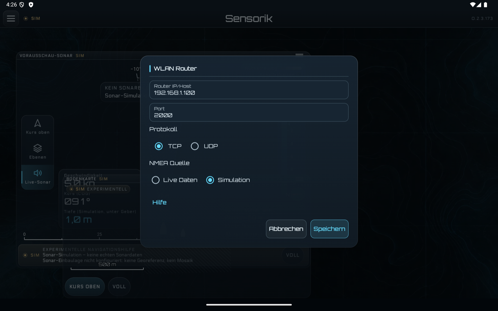
App-Aufnahme. Dialog „WLAN Router“: Live-Daten oder Simulation.">Karte, Batterie, Wind. Für Quer- und Hochformat merkt sich die App je eine eigene Anordnung.
Umgeschaltet wird mit der Taste „TAG“ an der Karte oder im Dialog „Darstellung“.
22 Anzeigen in 6 Bereichen, von Kompass und Tiefe bis Tank und Motordrehzahl.
Die App dekodiert 15 NMEA2000-Datensätze (PGNs) und die NMEA0183-Sätze für Position, Kurs, Fahrt, Tiefe, Wind und AIS. Angezeigt wird, was dein Bordnetz tatsächlich liefert.
Jede Seite stellst du aus dem Katalog zusammen. Zwischen den Seiten wechselst du mit einem Wisch.
Die Daten kommen per UDP oder TCP vom WLAN-Gateway. Läuft der eingebaute Simulator, steht in der Kopfleiste und in jeder Anzeige „SIM“.
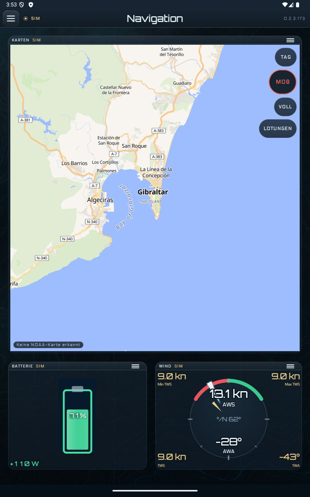
Online-Grundkarte, auf Wunsch mit den Seezeichen von OpenSeaMap.
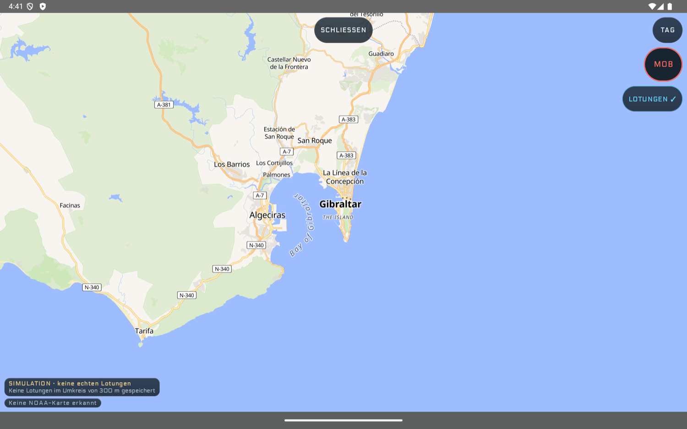
Sicherheitshinweis. seaFOX ist nicht für die alleinige Navigation bestimmt. Die App ist ein Marine-Assistent, kein amtliches Navigationssystem und kein Ersatz für amtliche Seekarten, Ausguck und Seemannschaft. Kartendaten, GPS, AIS und Sensorwerte können unvollständig, veraltet oder gestört sein. Prüfe kritische Entscheidungen mit geeigneten, aktuellen Navigationsmitteln.
In Entwicklung
Tiefenflächen, Tiefenlinien, Lotungen, Tonnen und Gefahrenstellen, bei Tag und bei Nacht.
Im aktuellen Hauptstand der App werden echte Kartenzellen noch nicht vollständig gezeichnet: Flächen und Linien fehlen, es erscheinen nur Punktobjekte. Deshalb steht hier eine Vorschau und kein Produktbild.
Die Darstellung folgt nicht der amtlichen Symbolnorm und ersetzt keine amtliche Karte. Die Karte darf an Bord auch hochkant stehen; die Vorschau zeigt sie so.
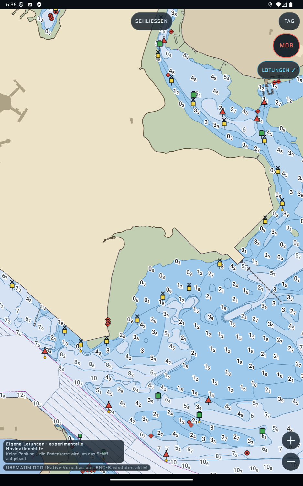
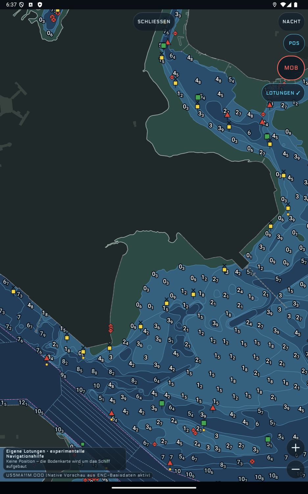
Drei Alarme, die deine Wache unterstützen. Sie ersetzen sie nicht.

Emulator-Aufnahmen vom 12.10.2026. Links die Seite „Instrumente“ hochkant mit Tiefenalarm; dafür wurde die Mindesttiefe im Simulator hochgestellt. Rechts Ausschnitte: die vier Zustände der Kopfleiste (LIVE aus synthetischen Testwerten über den Empfangsweg der App, SIM, VERALTET, KEINE DATEN) sowie Tiefenalarm, Ankerwache und AIS-Alarm aus simulierten Werten. Das Tablet ist gezeichnet. Ein Klick öffnet die Tafel in voller Größe.
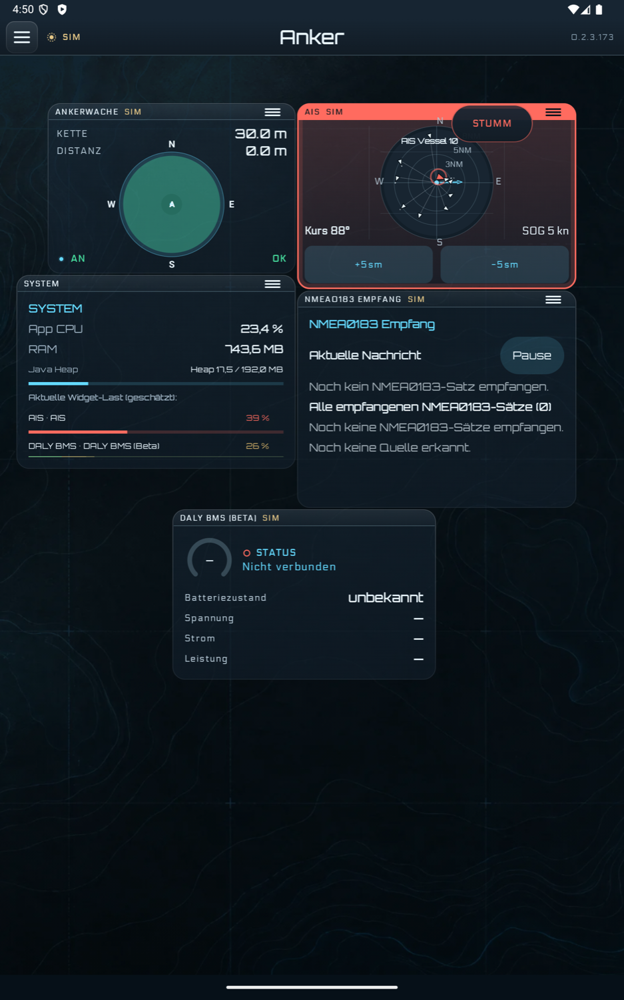
Experimentell, in Entwicklung
Bisher laufen sie nur mit simulierten Daten und sind an keiner echten Hardware geprüft.
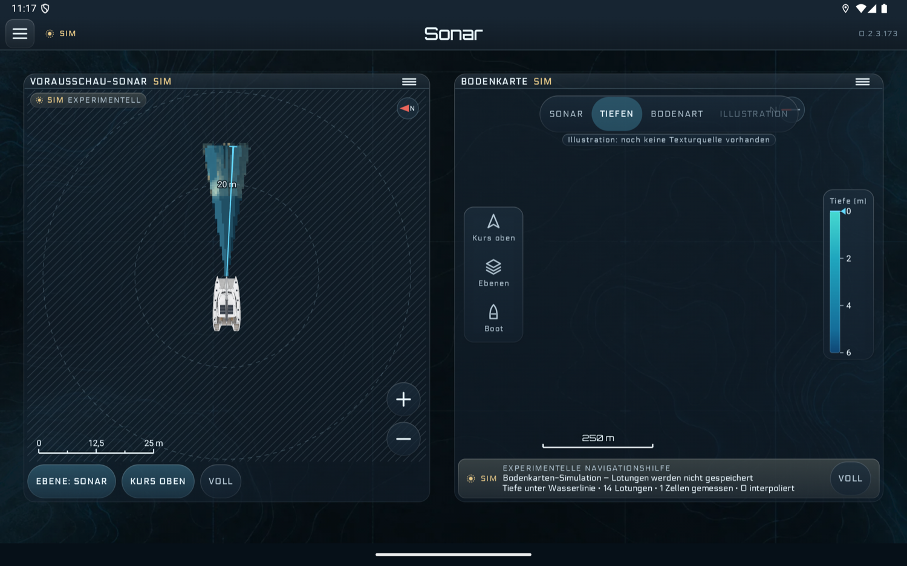
App-Aufnahme, Simulation. Sonarkarte mit Mosaik und Bodenkarte. Keine echten Sonardaten.">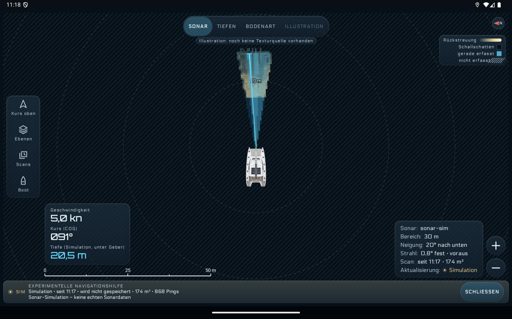
App-Aufnahme, Simulation. Sonarkarte im Vollbild. Keine echten Sonardaten; die Simulation wird nicht gespeichert.">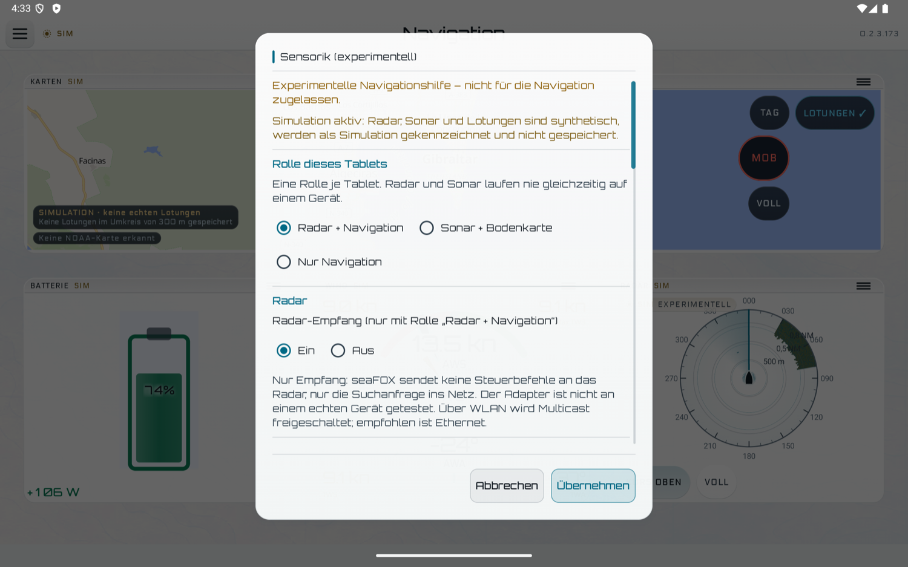
App-Aufnahme. Dialog „Sensorik (experimentell)“: Die Rolle des Tablets bestimmt, welche Sensoren es verarbeitet.">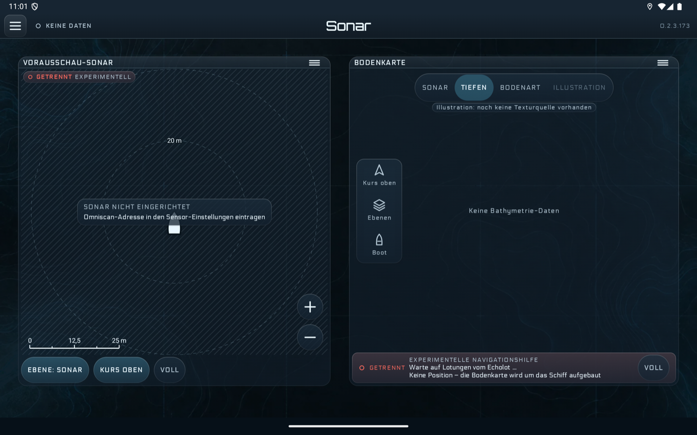
App-Aufnahme, ohne Daten. Ohne Simulation und ohne Gerät meldet die App „SONAR NICHT EINGERICHTET“ und zeigt kein Bild.">
Emulator-Aufnahmen vom 12.10.2026: Sonarkarte und Bodenkarte (quer), Radar im Vollbild und Vorausschau-Sonar (beide hochkant). Die Aufnahme des Vorausschau-Sonars stammt aus einer Demo-Kopie der App, nicht aus dem Hauptstand. Keine echten Radar- oder Sonardaten. Die Tablets sind gezeichnet. Ein Klick öffnet die Tafel in voller Größe.
Die Bodenkarte hat Ebenen für Tiefenzellen, Konturen, Tiefenwerte und Unsicherheit. Radar und Sonar laufen nie gleichzeitig auf einem Gerät. Welche Sensoren ein Tablet verarbeitet, legst du in den Einstellungen fest.
Vorhaben, noch keine Funktion
Das Ziel: sehen, wie sich ein Ankerplatz oder eine Einfahrt verändert. Die App erfindet dabei keine Daten: Wo nichts gemessen wurde, steht „nicht abgedeckt“.
Gemessene Lotungen legt die App lokal auf dem Tablet ab. Das Ziel: Scans nach Datum ordnen und Fahrten vergleichen. Im Hauptstand ist dieser Vergleich noch keine Funktion; das Bild zeigt einen Entwicklungsstand mit synthetischen Vorschaudaten.
Gemessenes, Interpoliertes und Klassifiziertes sieht nie gleich aus. Radar-, Sonar- und Tiefendaten werden nicht hochgerechnet, aufgefüllt oder mit Fototexturen belegt. Simulierte Lotungen werden nie gespeichert.
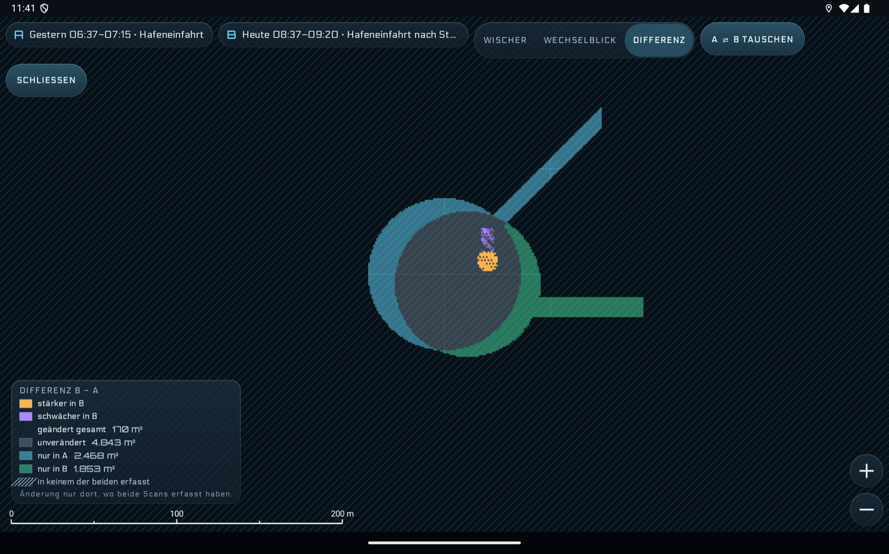
Entwicklungsvorschau mit synthetischen Vorschaudaten. Vergleich zweier Scans, Ansicht „Differenz“. Im Hauptstand sind Liste und Vergleich noch gesperrt.">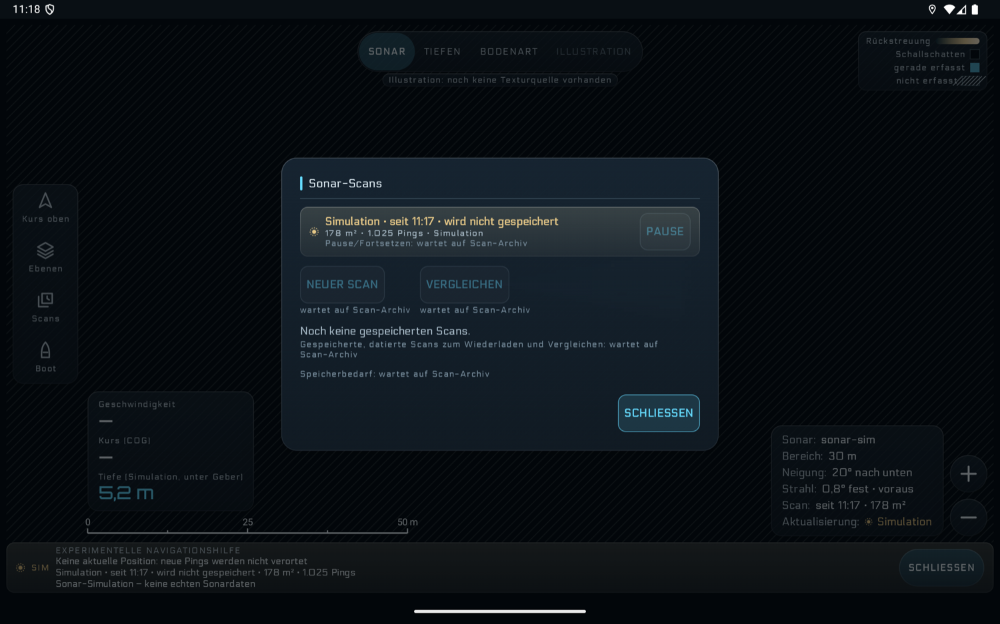
App-Aufnahme, Simulation. Dialog „Sonar-Scans“ im Hauptstand: ein laufender Scan, nichts gespeichert, Liste und Vergleich gesperrt.">Bootswerte, Karte und Ankerwache auf einem Tablet, das ohnehin an Bord ist.
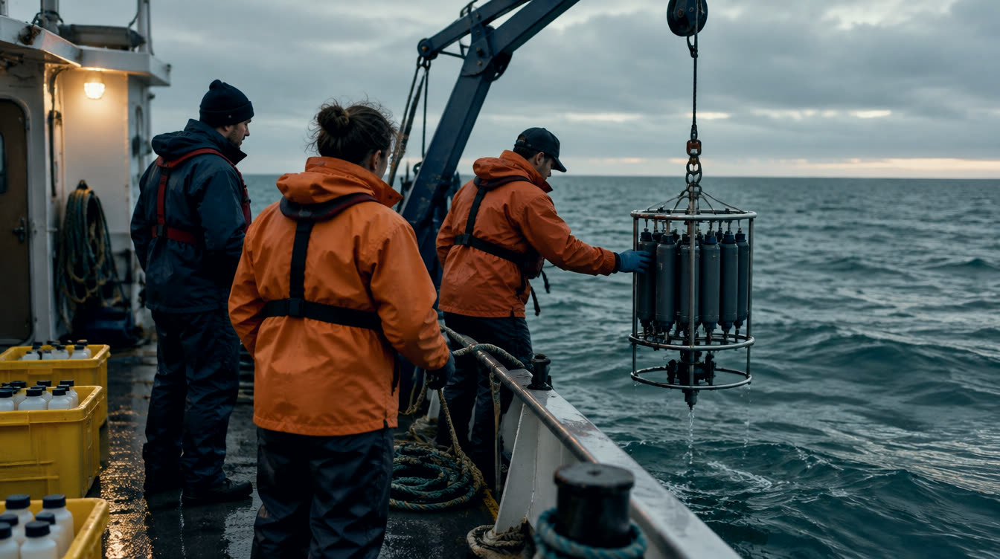
Die Herkunft jedes Sensorwerts bleibt sichtbar. Ein Werkzeug zum Mitentwickeln, kein Vermessungsgerät.
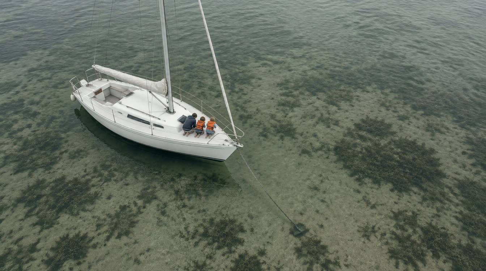
Karte und eigene Lotungen unter dem Boot. Die App erkennt nicht, woraus der Grund besteht.
Alpha. Kein Download, kein Veröffentlichungstermin.
Seiten, Anordnung und Einstellungen liegen lokal auf dem Tablet. Zugangsdaten verlassen den privaten Speicher der App nicht. Wenn du ein Backup exportierst, werden sie vorher entfernt; gelingt das nicht, wird kein Backup geschrieben.
In den Einstellungen legst du fest, ob Sicherungen nur intern bleiben, von Hand exportiert werden dürfen oder das Cloud-Backup des Systems erlaubt ist.
Die Online-Grundkarte lädt Kartenkacheln aus dem Internet, sobald eine Verbindung besteht. Die Datenschutzerklärung der App ist noch ein Entwurf.
Noch kein Download und kein Termin. Eine Kontaktadresse folgt.
Du hast ein Boot mit NMEA-Netz und ein Android-Tablet und willst eine frühe Version ausprobieren? Das Formular sendet nichts: Der Knopf öffnet einen E-Mail-Entwurf in deinem eigenen Mailprogramm.